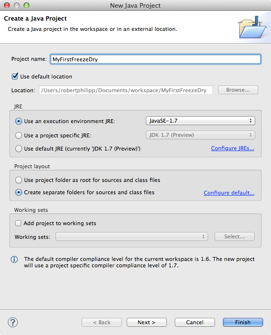
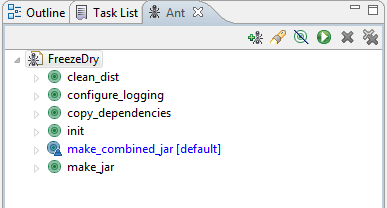

Quickstart
This quick start guide will describe how to:
- Download the source code and dependent JAR files
- Build the source code into class files and into a JAR
- Run the example code
- Make minor modifications to the code
See the User Guide for a detailed description of the code, how to extend it, and determining the best approach for extending FreezeDry based on your needs.
Downloading
You have several options for using FreezeDry. You can
- Download the source code from the Mecurial Repository
- Download the source code as a zip file, and grab the two XML files as well.
- Download a single JAR containing FreezeDry and all its dependencies
- Download a set individual of JAR files containing FreezeDry and its dependencies
hg
The Mercurial repo has everything you'll need to build and run the example FreezeDry code. It also contains a sample log4j XML configuration file, and a Ant build.xml file that can be used to create a single JAR containing the dependencies, or a single JAR without the dependencies.
Zip File
The zip file contains all the Java source code, but not the sample log4j XML configuration file, and a Ant build.xml file. These are, however, located in the same folder, and can be downloaded separately.
Single JAR
The single JAR file contains the FreezeDry JAR, and all the dependent JAR files wrapped into one convenient JAR file. No need to worry about the dependencies.
Set of Individual JAR Files
In some cases you may want a JAR containing only the FreezeDry code. And for convenience, we've placed the the dependent JAR files in that same folder for download.
Building
Java Version
FreezeDry is built on the latest and greatest Java version 7. It relies on features were made available in Java 7. If you're using the Mac OSX, you'll need to get the developer preview until the full version is made available.
Dev Environments
There are a variety of freely-available integrated development environments (IDE). I prefer Eclipse. Or you can use NetBeans. Or you can rough it and use the command line and vi. Whatever works for you. In this section I'll walk you through setting up in Eclipse. But in both of these examples, I'll use the downloaded source code. You can also import the hg repo directly into Eclipse or NetBeans, but the set up is more involved, and so I won't describe that here.
Before discussing the IDE I will assume that you have downloaded the source code and the JAR files upon which FreezeDry depends.
Eclipse
To start with Eclipse, we'll create a new Java project in Eclipse, import the downloaded code, set the JVM, set the build paths, and then run the sample code.
Create Eclipse Java Project
Once you have Eclipse fired-up, create a new Java project (File → New → Java Project). If you don't see the "Java Project" menu item, make sure that you are in the Java Perspective.
Eclipse will present you with a "New Project Screen" that looks like the screen shot shown above. There are a few things to note.
- Set the Project Name to "MyFirstFreezeDry", or something of your choosing.
- Make sure that the execution environment is set to the latest version of Java 7. So you'll see something like "JavaSE-1.7". If you don't have Java 7 installed, see the Java Version section.
- Click "Next >", select the "Libraries" tab, and Eclipse will present you with a screen as shown below.
Click on the "Add External JARs..." button and add the JAR files shown in the screen shot:
- json-yyyyMMdd.jar
- junit-4.8.1.jar
- log4j-1.2.15.jar
Then click on the "Finish" button to create the project. Next we'll add the source code.
Adding Source Code
To add the source code to your project, copy the downloaded source code, starting with the "org" directory into the "src" directory of your Eclipse project. Then copy the "log4j.xml" file into the top-level directory of your new project.
Creating a JAR File
FreezeDry comes with an Ant build-file named "build.xml". Pretty original, huh? In any case, place the "build.xml" file into the same directory where you placed the "log4j.xml" configuration file.
Next open the "Ant View" in Eclipse and add build.xml (click on the little ant with a plus side just to its left.). Upon which, you should see the something similar to the screenshot below.
Notice the target in blue text named "make_combined_jar [default]". Double-clicking on this target will build a single JAR containing all the dependent JARs.
The target just below it named "make_jar" builds a JAR file that contains only the FreezeDry code.
Running the Example Code
To run the example code, open the PersistenceEngine class file in the project. You'll notice that it has a main( ... ) method. That is the method to run for the example. Simply click on Eclipse's debug or run icon, or right click on the PersistenceEngine in the Project Explorer window, and select "Run As → Java Application" or "Debug As → Java Application" from the popup menu.
The example code does the following:
- Creates a Division class that could represent the division in a company, and then adds a few people (Person). It also adds some friends to one of the people, sets a birth date, and adds a few additional things to make a complex object structure.
- Creates and uses the PersistenceEngine to create a semantic model of the Division object it just created.
- Prints the semantic model to the console.
- Creates an XML file ("person.xml") and a JSON file ("person.json") containing the division.
- Creates an XML file reader uses it to create a semantic model from the "person.xml" file.
- Reconstructs the Division object from the semantic model.
- Prints the reconstructed object to the console.
- Creates an JSON file reader uses it to create a semantic model from the "person.json" file.
- Reconstructs the Division object from the semantic model.
- Prints the reconstructed object to the console.
That's it.